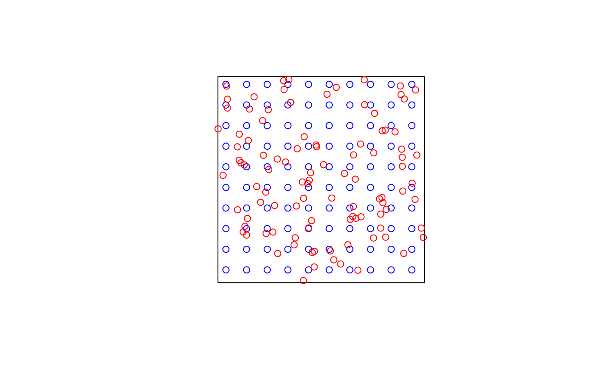
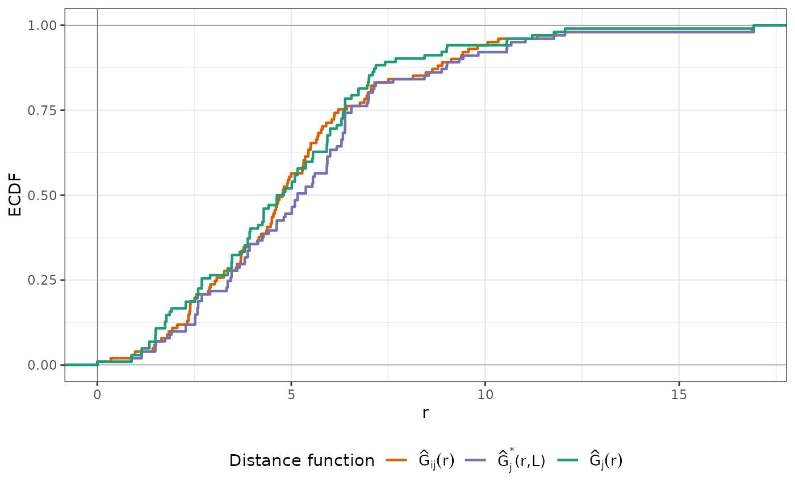

This function implements the NNDM algorithm and returns the necessary indices to perform a NNDM LOO CV for map validation.
Usage
nndm(
tpoints,
modeldomain = NULL,
predpoints = NULL,
space = "geographical",
samplesize = 1000,
sampling = "regular",
phi = "max",
min_train = 0.5
)Arguments
- tpoints
sf or sfc point object, or data.frame if space = "feature". Contains the training points samples.
- modeldomain
sf polygon object or SpatRaster defining the prediction area. Optional; alternative to predpoints (see Details).
- predpoints
sf or sfc point object, or data.frame if space = "feature". Contains the target prediction points. Optional; alternative to modeldomain (see Details).
- space
character. Either "geographical" or "feature". Feature space is still experimental, so use with caution.
- samplesize
numeric. How many points in the modeldomain should be sampled as prediction points? Only required if modeldomain is used instead of predpoints.
- sampling
character. How to draw prediction points from the modeldomain? See `sf::st_sample`. Only required if modeldomain is used instead of predpoints.
- phi
Numeric. Estimate of the landscape autocorrelation range in the same units as the tpoints and predpoints for projected CRS, in meters for geographic CRS. Per default (phi="max"), the maximum distance found in the training and prediction points is used. See Details.
- min_train
Numeric between 0 and 1. Minimum proportion of training data that must be used in each CV fold. Defaults to 0.5 (i.e. half of the training points).
Value
An object of class nndm consisting of a list of six elements:
indx_train, indx_test, and indx_exclude (indices of the observations to use as
training/test/excluded data in each NNDM LOO CV iteration), Gij (distances for
G function construction between prediction and target points), Gj
(distances for G function construction during LOO CV), Gjstar (distances
for modified G function during NNDM LOO CV), phi (landscape autocorrelation range).
indx_train and indx_test can directly be used as "index" and "indexOut" in
caret's trainControl function or used to initiate a custom validation strategy in mlr3.
Details
NNDM proposes a LOO CV scheme such that the nearest neighbour distance distribution function between the test and training data during the CV process is matched to the nearest neighbour distance distribution function between the prediction and training points. Details of the method can be found in Milà et al. (2022).
Specifying phi allows limiting distance matching to the area where this is assumed to be relevant due to spatial autocorrelation. Distances are only matched up to phi. Beyond that range, all data points are used for training, without exclusions. When phi is set to "max", nearest neighbor distance matching is performed for the entire prediction area. Euclidean distances are used for projected and non-defined CRS, great circle distances are used for geographic CRS (units in meters).
The modeldomain is either a sf polygon that defines the prediction area, or alternatively a SpatRaster out of which a polygon, transformed into the CRS of the training points, is defined as the outline of all non-NA cells. Then, the function takes a regular point sample (amount defined by samplesize) from the spatial extent. As an alternative use predpoints instead of modeldomain, if you have already defined the prediction locations (e.g. raster pixel centroids). When using either modeldomain or predpoints, we advise to plot the study area polygon and the training/prediction points as a previous step to ensure they are aligned.
Note
NNDM is a variation of LOOCV and therefore may take a long time for large training data sets. See knndm for a more efficient k-fold variant of the method.
References
Milà, C., Mateu, J., Pebesma, E., Meyer, H. (2022): Nearest Neighbour Distance Matching Leave-One-Out Cross-Validation for map validation. Methods in Ecology and Evolution 00, 1– 13.
Meyer, H., Pebesma, E. (2022): Machine learning-based global maps of ecological variables and the challenge of assessing them. Nature Communications. 13.
Examples
########################################################################
# Example 1: Simulated data - Randomly-distributed training points
########################################################################
library(sf)
# Simulate 100 random training points in a 100x100 square
set.seed(123)
poly <- list(matrix(c(0,0,0,100,100,100,100,0,0,0), ncol=2, byrow=TRUE))
sample_poly <- sf::st_polygon(poly)
train_points <- sf::st_sample(sample_poly, 100, type = "random")
pred_points <- sf::st_sample(sample_poly, 100, type = "regular")
plot(sample_poly)
plot(pred_points, add = TRUE, col = "blue")
plot(train_points, add = TRUE, col = "red")

# Run NNDM for the whole domain, here the prediction points are known
nndm_pred <- nndm(train_points, predpoints=pred_points)
nndm_pred
#> nndm object
#> Total number of points: 100
#> Mean number of training points: 98.54
#> Minimum number of training points: 83
plot(nndm_pred)

plot(nndm_pred, type = "simple") # For more accessible legend labels
# ...or run NNDM with a known autocorrelation range of 10
# to restrict the matching to distances lower than that.
nndm_pred <- nndm(train_points, predpoints=pred_points, phi = 10)
nndm_pred
#> nndm object
#> Total number of points: 100
#> Mean number of training points: 98.72
#> Minimum number of training points: 96
plot(nndm_pred)
########################################################################
# Example 2: Simulated data - Clustered training points
########################################################################
library(sf)
# Simulate 100 clustered training points in a 100x100 square
set.seed(123)
poly <- list(matrix(c(0,0,0,100,100,100,100,0,0,0), ncol=2, byrow=TRUE))
sample_poly <- sf::st_polygon(poly)
train_points <- clustered_sample(sample_poly, 100, 10, 5)
pred_points <- sf::st_sample(sample_poly, 100, type = "regular")
plot(sample_poly)
plot(pred_points, add = TRUE, col = "blue")
plot(train_points, add = TRUE, col = "red")
# Run NNDM for the whole domain
nndm_pred <- nndm(train_points, predpoints=pred_points)
nndm_pred
#> nndm object
#> Total number of points: 100
#> Mean number of training points: 86.84
#> Minimum number of training points: 50
plot(nndm_pred)
plot(nndm_pred, type = "simple") # For more accessible legend labels
########################################################################
# Example 3: Real- world example; using a SpatRast modeldomain instead
# of previously sampled prediction locations
########################################################################
if (FALSE) {
library(sf)
library(terra)
### prepare sample data:
data(cookfarm)
dat <- aggregate(cookfarm[,c("DEM","TWI", "NDRE.M", "Easting", "Northing","VW")],
by=list(as.character(cookfarm$SOURCEID)),mean)
pts <- dat[,-1]
pts <- st_as_sf(pts,coords=c("Easting","Northing"))
st_crs(pts) <- 26911
studyArea <- rast(system.file("extdata","predictors_2012-03-25.tif",package="CAST"))
pts <- st_transform(pts, crs = st_crs(studyArea))
terra::plot(studyArea[["DEM"]])
terra::plot(vect(pts), add = T)
nndm_folds <- nndm(pts, modeldomain = studyArea)
plot(nndm_folds)
#use for cross-validation:
library(caret)
ctrl <- trainControl(method="cv",
index=nndm_folds$indx_train,
indexOut=nndm_folds$indx_test,
savePredictions='final')
model_nndm <- train(dat[,c("DEM","TWI", "NDRE.M")],
dat$VW,
method="rf",
trControl = ctrl)
global_validation(model_nndm)
}
########################################################################
# Example 4: Real- world example; nndm in feature space
########################################################################
if (FALSE) {
library(sf)
library(terra)
library(ggplot2)
# Prepare the splot dataset for Chile
data(splotdata)
splotdata <- splotdata[splotdata$Country == "Chile",]
# Select a series of bioclimatic predictors
predictors <- c("bio_1", "bio_4", "bio_5", "bio_6",
"bio_8", "bio_9", "bio_12", "bio_13",
"bio_14", "bio_15", "elev")
predictors_sp <- terra::rast(system.file("extdata", "predictors_chile.tif", package="CAST"))
# Data visualization
terra::plot(predictors_sp[["bio_1"]])
terra::plot(vect(splotdata), add = T)
# Run and visualise the nndm results
nndm_folds <- nndm(splotdata[,predictors], modeldomain = predictors_sp, space = "feature")
plot(nndm_folds)
#use for cross-validation:
library(caret)
ctrl <- trainControl(method="cv",
index=nndm_folds$indx_train,
indexOut=nndm_folds$indx_test,
savePredictions='final')
model_nndm <- train(st_drop_geometry(splotdata[,predictors]),
splotdata$Species_richness,
method="rf",
trControl = ctrl)
global_validation(model_nndm)
}